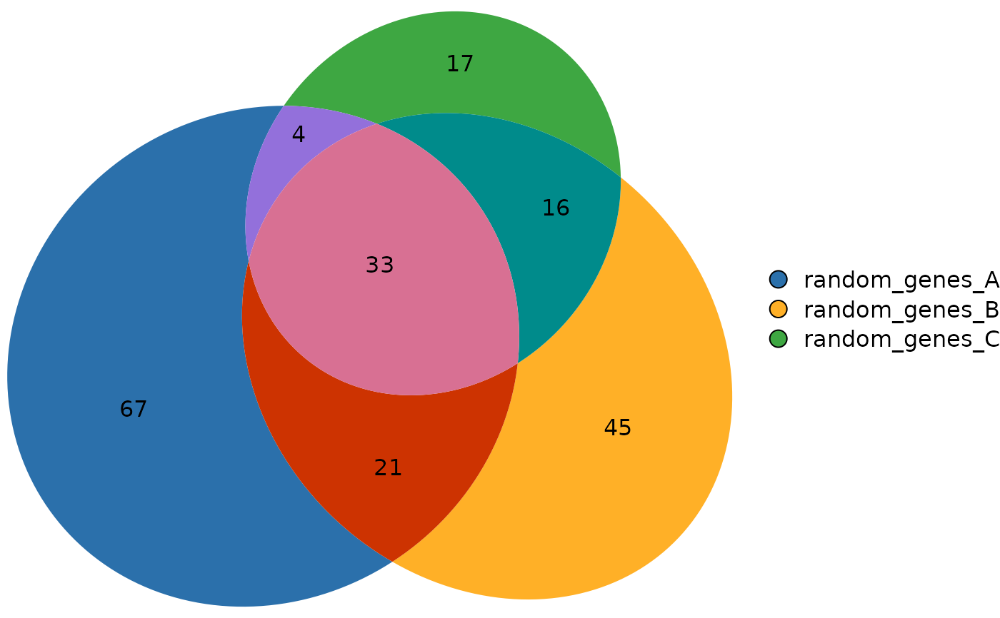

Compute Overlaps Between Multiple Sets or Genomic Regions
Source:R/computeOverlaps.R
computeOverlaps.RdcomputeOverlaps() is the main entry point for overlap analysis. It accepts
either genomic region objects (GRanges/GRangesList) or ordinary sets
(character/numeric vectors) and computes a binary overlap matrix describing
the presence or absence of each element across sets.
Value
An S3 object encoding the overlap result whose class depends on the input type:
- GenomicOverlapResult
Returned when the input is genomic (
GRangesListor list ofGRanges). A list with:reduced_regions: AGRangesobject containing the merged (non-redundant) intervals. Each region is annotated with anintersect_categorycolumn.overlap_matrix: A logical matrix indicating whether each reduced region overlaps each input set (rows = regions, columns = sets).
- SetOverlapResult
Returned when the input is a list of atomic vectors. A list with:
unique_elements: Character vector of all unique elements across the sets.overlap_matrix: A logical matrix indicating whether each element is present in each set (rows = elements, columns = sets).intersect_category: Character vector of category codes (e.g.,"110") for each element.
Details
When provided with genomic regions, the function merges all intervals into a non-redundant set (
reduce()), then determines which original sets each region overlaps.When provided with ordinary sets (e.g., gene symbols), it collects all unique elements and records which sets contain them.
The resulting object encodes both the overlap matrix and compact category
labels (e.g., "110") representing the overlap pattern of each element.
These results can be directly passed to visualization functions such as
plotVenn() or plotUpSet().
Internally, computeOverlaps() dispatches to either
computeGenomicOverlaps() (for genomic inputs) or
computeSetOverlaps() (for ordinary sets). Users are encouraged to call
only computeOverlaps().
Examples
# Example with gene sets (built-in dataset)
data(gene_list)
ov_sets <- computeOverlaps(gene_list)
head(ov_sets$overlap_matrix)
#> random_genes_A random_genes_B random_genes_C
#> ALPP TRUE FALSE FALSE
#> ACTG1P9 TRUE FALSE FALSE
#> AHSG TRUE FALSE FALSE
#> ASIC2 TRUE FALSE FALSE
#> ACTG1P10 TRUE FALSE FALSE
#> ALAS1 TRUE FALSE FALSE
plotVenn(ov_sets)

# Example with genomic regions (built-in dataset)
data(a549_chipseq_peaks)
ov_gr <- computeOverlaps(a549_chipseq_peaks)
head(ov_gr$overlap_matrix)
#> MED1_Dex_chr7 BRD4_Dex_chr7 GR_Dex_chr7
#> [1,] FALSE TRUE FALSE
#> [2,] FALSE TRUE FALSE
#> [3,] FALSE FALSE TRUE
#> [4,] TRUE TRUE TRUE
#> [5,] FALSE TRUE FALSE
#> [6,] FALSE TRUE FALSE
plotVenn(ov_gr)